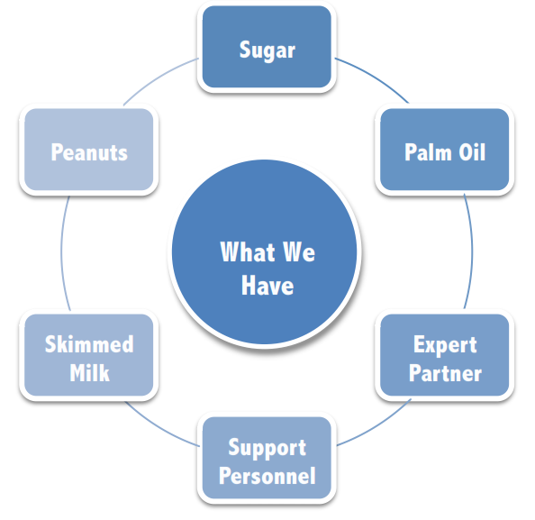
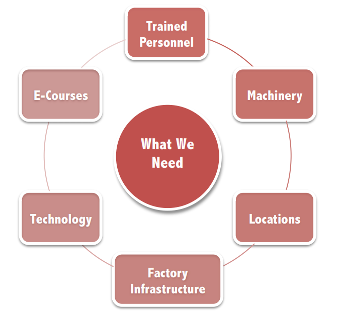

Feasibility

RUTF Factory
Locally Available Raw materials
- Local production of peanuts: 155 MT of peanuts in 2014. Major growth in production in 2007, stable since 2009. 96.8% of total
peanut production is committed for domestic consumption.
- Local production of sugar: 2120 MT in 2014, Significant increase in production in 2013. 82.3% committed for domestic production.
- Local production of palm oil: 60 MT in 2014. Stable production since 2013.
- Domestic availability of high quality dry skimmed milk: Moisture, fat, protein, ash, and lactose of locally packed milk powders are almost
insignificantly different (p<0.05) and they are comparable to the compositional quality in US and Argentina. (Khalid, El Khier, El Gasim:
2009 Journal of Nutrition.)
High Demand:
UNICEF has launched a new tender process for 2014 procurement, and intends to continue increasing the share of locally
produced and procured RUTF.
Personnel and Expertise
- Expert partner: Peanut Butter Project (PBP). They have succesful projects in Mali, Ghana, Sierra Leone, and currently partner with
more 11 non-profits and private corporations such as MSF, Clinton Foundation, UNICEF, PB Crave, and USAID, among others.
- Support personnel: Availability of labor for hiring security and facilities personnel.
eLearning Academy
Trained personel
- Government of Sudan support for Academy.
- Changemaker donor support of project.
- Free eLearning portal and resources from LINGOs.
- Availability of labor for facilities and support personnel.

RUTFs Factory
- Strategic location and sound infraestructure: a setting for the production where factors like
transport accesibility, proximity to suppliers and labor and safety, energy and utilities are available
and security for personnel and installations are favorable and conducive to the success of the
project.
- Machinery: A RUTF production kit that is able to produce 100 MT per month, 1200 MT per year.
- Trained personnel: Staff to operate the machinery and run the factory. Peanut Butter Project will provide extensive
training for all staff neccesary to set up and run the factory.
E-Learning Academy
- E-learning specialist training and certification: special training for the Project Manager/Team Leader to prepare and
launch a full e-learning program.
- Online courses and modules: the software and content for the various trainings e-learner students will receive in
Nessa El-Kanz’s Academy.
- Strategic location and sound infrastructure: A secure building in a favorable location to set up the computer
e-learning stations, with the proper technical and sanitary facilities.
- Computers and technichal equipment: Computers, webcameras, headsets, speakers, microphones, printers, scanners,
etc.
- Support equipment: desks, chairs, tables, extension chords, trash cans, storage units, safes, etc.